| Performance measure | Strategic diagram |
| coreDocuments-documentsCount | 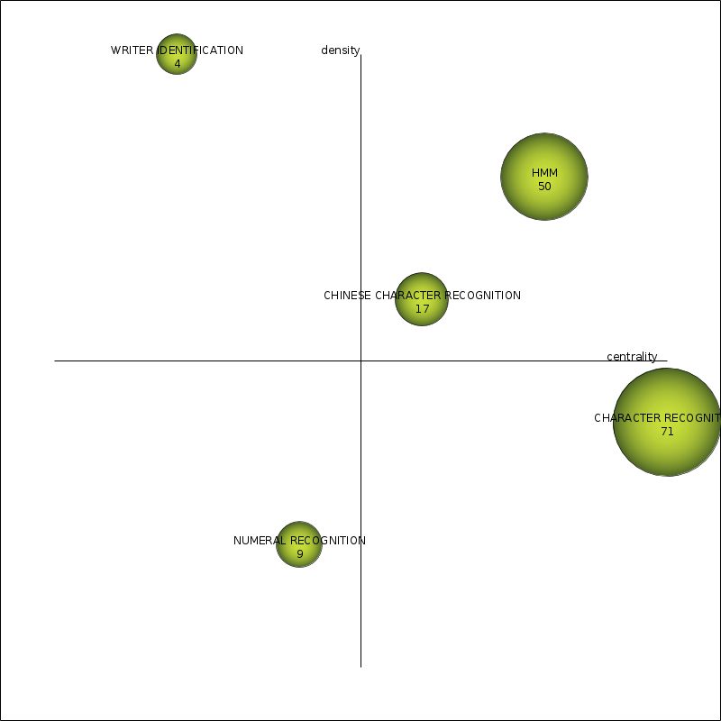 |
| coreDocuments-hIndex | 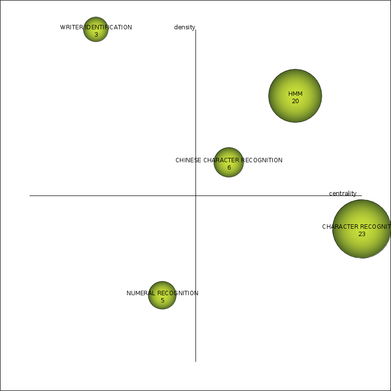 |
| coreDocuments-averageCitations | 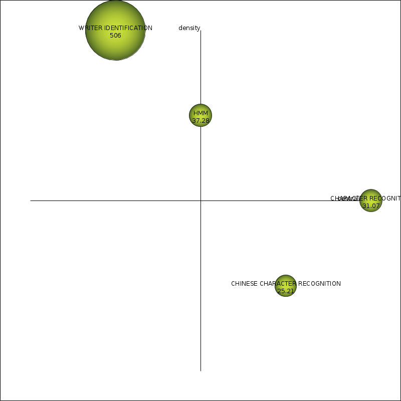 |
| coreDocuments-sumCitations | 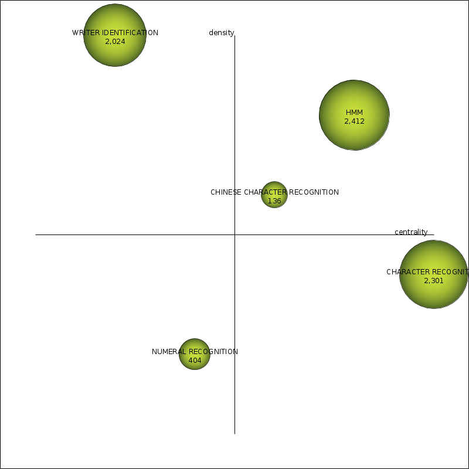 |
| unionDocuments-documentsCount | 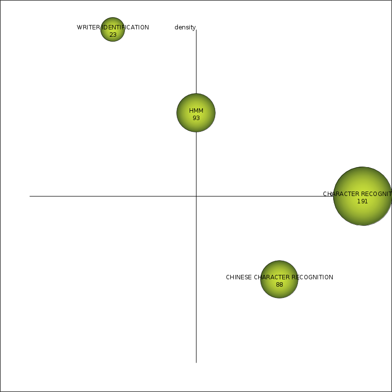 |
| unionDocuments-hIndex | 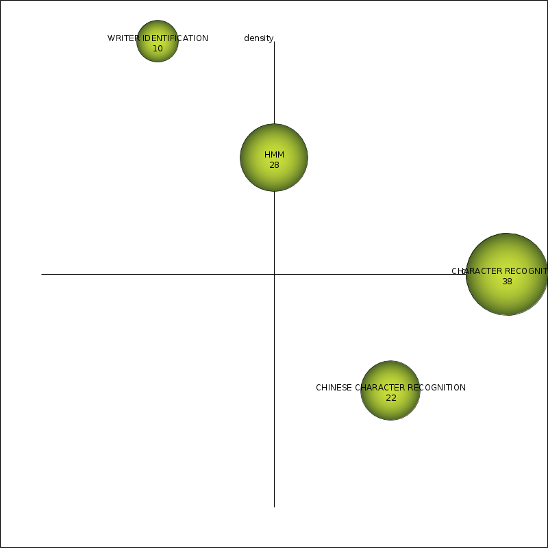 |
| unionDocuments-averageCitations | 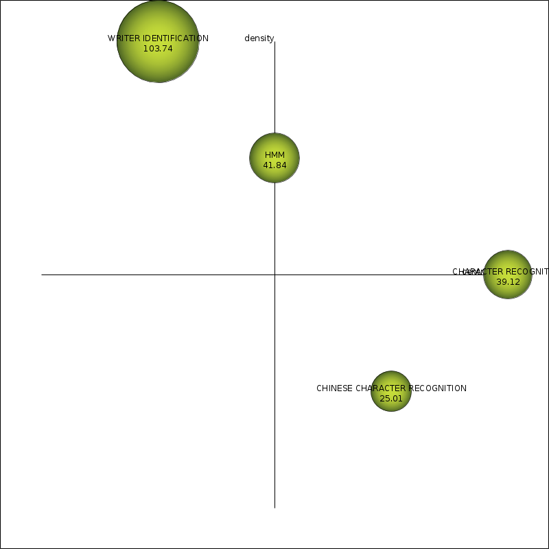 |
| unionDocuments-sumCitations | 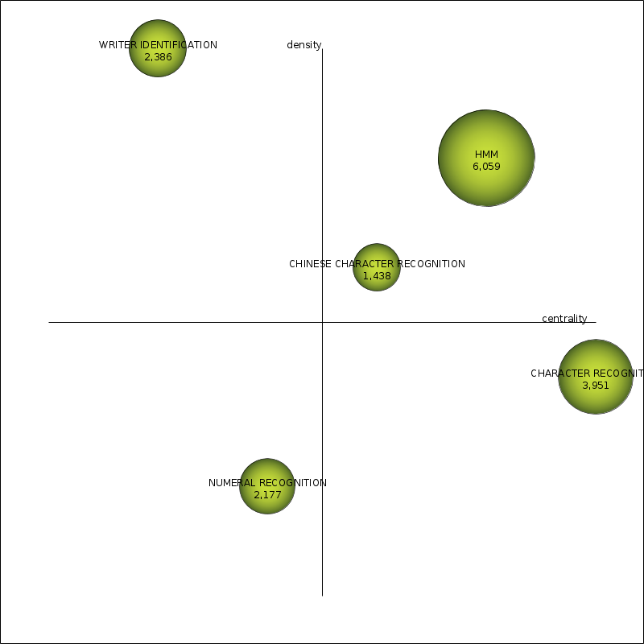 |
| Name | Centrality | Centrality range | Density | Density range |
| HMM | 16.24 | 0.8 | 12.46 | 0.8 |
| CHARACTER RECOGNITION | 21 | 1 | 9.63 | 0.4 |
| CHINESE CHARACTER RECOGNITION | 10.23 | 0.6 | 9.84 | 0.6 |
| NUMERAL RECOGNITION | 7.34 | 0.4 | 2.2 | 0.2 |
| WRITER IDENTIFICATION | 0.49 | 0.2 | 12.94 | 1 |
| Name | coreDocumentsdocumentsCount | coreDocumentshIndex | coreDocumentsaverageCitations | coreDocumentssumCitations | unionDocumentsdocumentsCount | unionDocumentshIndex | unionDocumentsaverageCitations | unionDocumentssumCitations |
| HMM | 50 | 20 | 48.24 | 2,412 | 122 | 29 | 49.66 | 6,059 |
| CHARACTER RECOGNITION | 71 | 23 | 32.41 | 2,301 | 164 | 35 | 24.09 | 3,951 |
| CHINESE CHARACTER RECOGNITION | 17 | 6 | 8 | 136 | 59 | 19 | 24.37 | 1,438 |
| NUMERAL RECOGNITION | 9 | 5 | 44.89 | 404 | 63 | 22 | 34.56 | 2,177 |
| WRITER IDENTIFICATION | 4 | 3 | 506 | 2,024 | 23 | 10 | 103.74 | 2,386 |
| Name | Cluster's network |
| HMM | 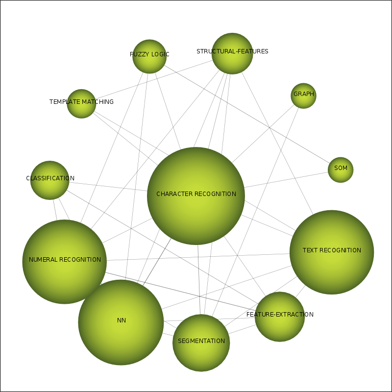 |
| CHARACTER RECOGNITION | 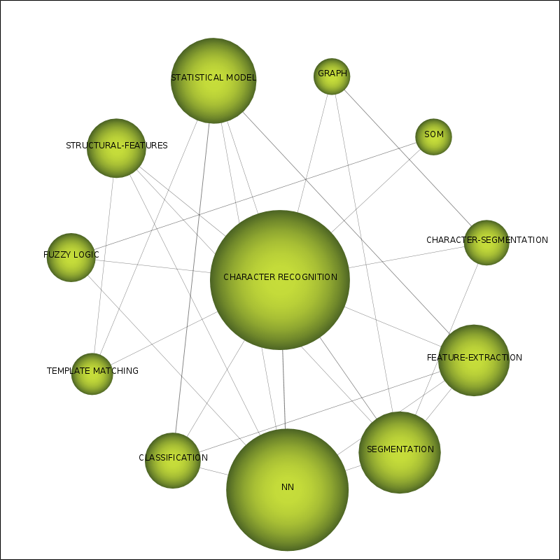 |
| CHINESE CHARACTER RECOGNITION | 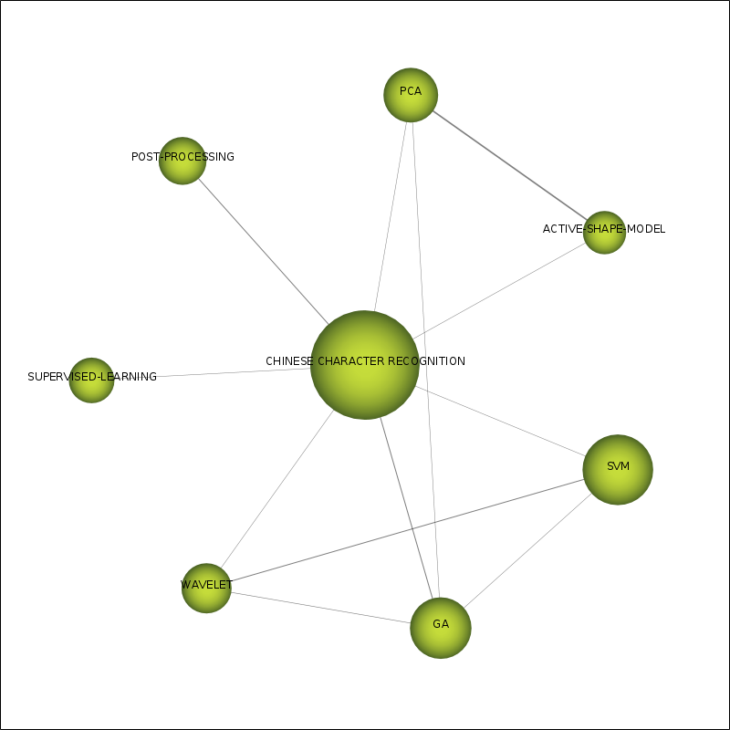 |
| NUMERAL RECOGNITION | 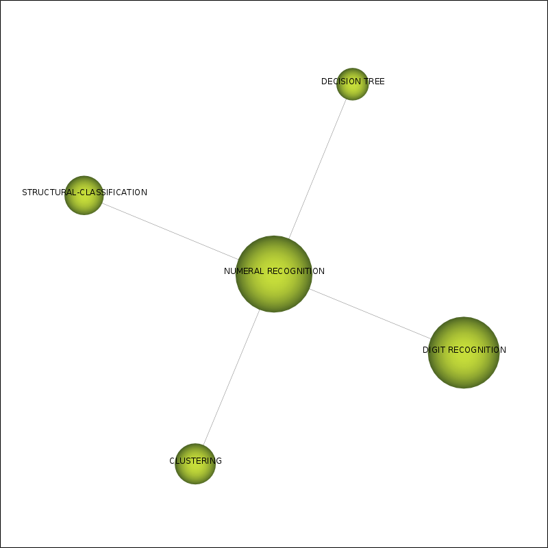 |
| WRITER IDENTIFICATION | 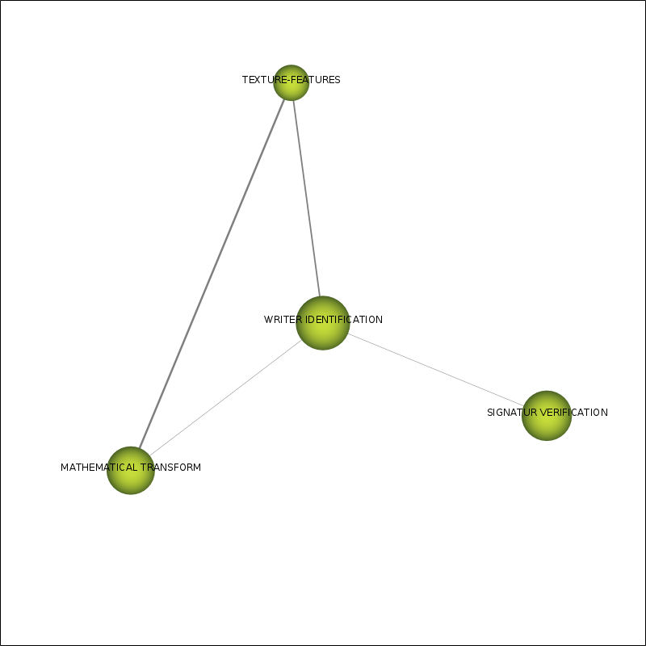 |